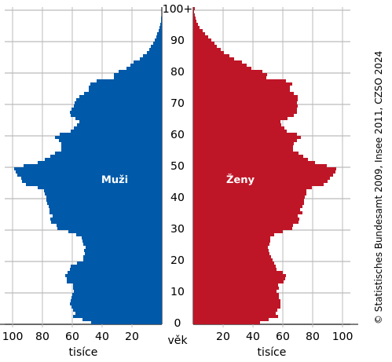

Obyvatestvo
Informace
- počet obyvatel ČR: 10 897 237 (30. 9. 2024, ČSÚ)
- porodnost (natalita, počítá se v ‰) - počet narozených dětí na datém místě v daném čase
- úmrtnost (mortalita, počítá se v ‰) - počet zemřelých na datém místě v daném roce
- sčítání lidu - každých 10 let, ČSÚ
Složení obyvatelstva

data k 31. 12. 2023, ČSÚ
- věková pyramida
- věkové složení obyvatelstva
- předproduktivní (0 - 14 let) - 13 %
- produktivní (15 - 64 let) - 70 %
- postproduktivní (65 a více let) - 17 %